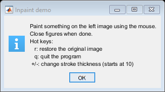

Inpainting demo
We will learn how to remove small noises, strokes, etc. in old photographs by a method called inpainting.
Inpainting repairs damage to images by flood-filling the damage with surrounding image areas.
Sources:
Contents
Theory
Most of you will have some old degraded photos at your home with some black spots or some strokes on it. Have you ever thought of restoring it back? We can't simply erase them in a paint tool because it is will simply replace black structures with white structures which is of no use. In these cases, a technique called image inpainting is used. The basic idea is simple: Replace those bad marks with its neighbouring pixels so that it looks like the neigbourhood. Consider the image shown below (taken from Wikipedia):

Several algorithms were designed for this purpose and OpenCV provides two of them. Both can be accessed by the same function, cv.inpaint. (Additional algorithms are implemented in cv.inpaint2, part of opencv_contrib).
First algorithm is based on the paper "An Image Inpainting Technique Based on the Fast Marching Method". It is based on Fast Marching Method. Consider a region in the image to be inpainted. Algorithm starts from the boundary of this region and goes inside the region gradually filling everything in the boundary first. It takes a small neighbourhood around the pixel on the neigbourhood to be inpainted. This pixel is replaced by normalized weighted sum of all the known pixels in the neigbourhood. Selection of the weights is an important matter. More weightage is given to those pixels lying near to the point, near to the normal of the boundary and those lying on the boundary contours. Once a pixel is inpainted, it moves to next nearest pixel using Fast Marching Method. FMM ensures those pixels near the known pixels are inpainted first, so that it just works like a manual heuristic operation. This algorithm is enabled by using Method = 'Telea'.
Second algorithm is based on the paper "Navier-Stokes, Fluid Dynamics, and Image and Video Inpainting". This algorithm is based on fluid dynamics and utilizes partial differential equations. Basic principle is heurisitic. It first travels along the edges from known regions to unknown regions (because edges are meant to be continuous). It continues isophotes (lines joining points with same intensity, just like contours joins points with same elevation) while matching gradient vectors at the boundary of the inpainting region. For this, some methods from fluid dynamics are used. Once they are obtained, color is filled to reduce minimum variance in that area. This algorithm is enabled by using Method = 'NS'.
Citations
- Bertalmio, Marcelo, Andrea L. Bertozzi, and Guillermo Sapiro. "Navier-stokes, fluid dynamics, and image and video inpainting." In Computer Vision and Pattern Recognition, CVPR 2001. Proceedings of the 2001 IEEE Computer Society Conference on, vol. 1, pp. I-355. IEEE, 2001.
- Telea, Alexandru. "An image inpainting technique based on the fast marching method." Journal of graphics tools 9.1 (2004): 23-34.
Code
We need to create a mask of same size as that of input image, where non-zero pixels corresponds to the area which is to be inpainted. Everything else is straightforward.
function varargout = inpaint_demo(im) % load an image if nargin < 1 img = sampleImage(); elseif isempty(im) [im,cancel] = imgetfile(); assert(~cancel, 'No file selected'); img = imread(im); elseif ischar(im) img = cv.imread(im, 'Color',true); else img = im; end assert(size(img,3) == 3, 'Expecting a color image'); % build and initialize GUI h = buildGUI(img); if nargout > 0, varargout{1} = h; end % display instructions onHelp([],[]); end
Helper functions
function img = sampleImage() fname = fullfile(mexopencv.root(),'test','lena.jpg'); img = cv.imread(fname, 'Color',true); % draw some instructions on top of image opts = {'Color',[255 0 0], 'FontFace','HersheyTriplex', ... 'Thickness',2, 'LineType','AA'}; img = cv.putText(img, 'try to remove', [100 50], opts{:}); img = cv.putText(img, 'the following text.', [70 150], opts{:}); end function data = initData(img) %INITDATA Initialize app data data = struct(); data.img = img; % input image data.img_marked = img; % input image with mask drawn on it % inpaint mask of same size % (indicates the area that needs to be inpainted) [data.h,data.w,~] = size(img); data.mask = zeros([data.h, data.w], 'uint8'); % keep track of location of the last point pressed with the mouse data.prev_pt = []; % stroke thickness data.thick = 10; end function handles = buildGUI(img) %BUILDGUI Creates the UI % common props [h,w,~] = size(img); fprops = {'Menubar','none', 'Resize','off', ... 'BusyAction','cancel', 'Interruptible','off'}; aprops = {'Units','normalized', 'Position',[0 0 1 1]}; % show input image hFig(1) = figure('Name','Image', 'Position',[100 200 w h], fprops{:}); hAx(1) = axes('Parent',hFig(1), aprops{:}); if mexopencv.isOctave() hImg(1) = imshow(img); else hImg(1) = imshow(img, 'Parent',hAx(1)); end % show output image hFig(2) = figure('Name','Inpaint', 'Position',[200+w 200 w h], fprops{:}); hAx(2) = axes('Parent',hFig(2), aprops{:}); if mexopencv.isOctave() hImg(2) = imshow(img); else hImg(2) = imshow(img, 'Parent',hAx(2)); end % initialize structs of handles and data handles = struct(); handles.hFig = hFig; handles.hAx = hAx; handles.hImg = hImg; guidata(hFig(1), initData(img)); % hook-up figure event handlers set(hFig, 'KeyPressFcn',{@onKeyPress,handles}, ... 'CloseRequestFcn',@(~,~) delete(hFig)); set(hFig(1), 'WindowButtonDownFcn',{@onMouseDown,handles}, ... 'WindowButtonUpFcn',{@onMouseUp,handles}, ... 'WindowButtonMotionFcn',{@onMouseMove,handles}); end function p = getCurrentPoint(handles, data) % retrieve current mouse location p = get(handles.hAx(1), 'CurrentPoint'); p = p(1,1:2); % convert axes coordinates to image pixel coordinates if ~mexopencv.isOctave() && mexopencv.require('images') %HACK: AXES2PIX not implemented in Octave p(1) = axes2pix(data.w, get(handles.hImg(1),'XData'), p(1)); p(2) = axes2pix(data.h, get(handles.hImg(1),'YData'), p(2)); end end

Callback functions
function onHelp(~,~) %ONHELP Display usage help dialog h = helpdlg({ 'Paint something on the left image using the mouse.' 'Close figures when done.' 'Hot keys:' ' r: restore the original image' ' q: quit the program' ' +/-: change stroke thickness (starts at 10)' }, 'Inpaint demo'); set(h, 'WindowStyle','modal'); end function onKeyPress(~,e,handles) %ONKEYPRESS Event handler for key press on figure % make sure both figures are still open if ~all(ishghandle(handles.hFig)), return; end % handle keys switch lower(e.Key) case 'r' % reset data data = guidata(handles.hFig(1)); data.img_marked = data.img; data.mask(:) = 0; data.prev_pt = []; guidata(handles.hFig(1), data); % reset images set(handles.hImg(1), 'CData',data.img); set(handles.hImg(2), 'CData',data.img); drawnow; case {'add', 'subtract'} data = guidata(handles.hFig(1)); if strcmp(e.Character, '+') data.thick = min(data.thick + 2, 40); elseif strcmp(e.Character, '-') data.thick = max(data.thick - 2, 1); end guidata(handles.hFig(1), data); case 'h' onHelp([],[]); case {'q', 'escape'} % close both figures close(handles.hFig); end end function onMouseDown(o,~,handles) %ONMOUSEDOWN Event handler for mouse down on figure % make sure both figures are still open if ~all(ishghandle(handles.hFig)), return; end % get current point and store it as starting point data = guidata(handles.hFig(1)); data.prev_pt = getCurrentPoint(handles, data); guidata(handles.hFig(1), data); % change cursor shape to indicate drawing mode set(o, 'Pointer','cross') end function onMouseMove(~,~,handles) %ONMOUSEMOVE Event handler for mouse move on figure % make sure both figures are still open if ~all(ishghandle(handles.hFig)), return; end % if mouse was not pressed, quit data = guidata(handles.hFig(1)); if isempty(data.prev_pt), return; end % get current point (ending point) pt = getCurrentPoint(handles, data); % draw line connecting from previous point to current % on both mask and marked image data.mask = cv.line(data.mask, data.prev_pt, pt, ... 'Color',255, 'Thickness',data.thick); % non-zero value data.img_marked = cv.line(data.img_marked, data.prev_pt, pt, ... 'Color',[255 255 255], 'Thickness',data.thick); % white % store point as new starting point data.prev_pt = pt; guidata(handles.hFig(1), data); % show image with markers set(handles.hImg(1), 'CData',data.img_marked); drawnow; end function onMouseUp(o,~,handles) %ONMOUSEUP Event handler for mouse up on figure % make sure both figures are still open if ~all(ishghandle(handles.hFig)), return; end % clear point data = guidata(handles.hFig(1)); data.prev_pt = []; guidata(handles.hFig(1), data); % change cursor shape back to normal set(o, 'Pointer','arrow') % perform inpainting using specified mask out = cv.inpaint(data.img, data.mask, 'Radius',3, 'Method','Telea'); % show the inpainting set(handles.hImg(2), 'CData',out); drawnow; end